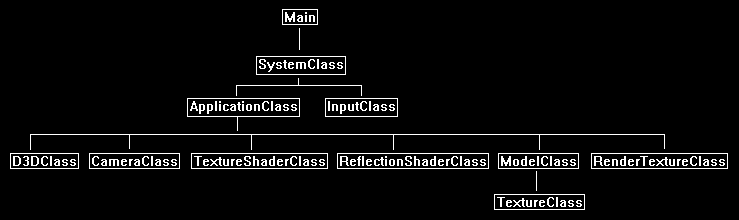

This tutorial will cover how to implement basic planar reflections in DirectX 11 using HLSL and C++.
The code in this tutorial is based on the previous tutorials.
In this tutorial we will render a cube being reflected by a blue floor.
To create the reflection effect, we first need a reflection view matrix.
This is the same as the regular camera created view matrix except that we render from the opposite side of the plane to create the reflection.
The cube is being reflected by the floor object so we need to setup the reflection matrix along the Y plane to match the floor.
In this example the camera is located at 0.0 on the Y axis and the floor is located at -1.5 on the Y axis,
so our reflection view point will need to be the inverse of the camera in relation to the floor which will end up being -3.0 on the Y axis.
Here is a diagram to illustrate the example:

Now that we have a reflection matrix, we can use it to render the scene from the reflection camera view point instead of the regular camera view point.
And when we render from the reflection view point, we will render that data to a texture instead of the back buffer.
This will give us the reflection of our scene on a texture.
The final step is to make a second render pass of our scene but when we do so we use the reflection render to texture and blend it with the floor.
This will be done using the reflection view matrix and the normal view matrix to project the reflection render texture correctly onto the floor geometry.

Framework
The frame work has been updated to include a new class called ReflectionShaderClass for this tutorial.
This class is the same as the TextureShaderClass except it handles a reflection view matrix and a reflection texture for interfacing with the new HLSL reflection shader code.

We will start the code section of the tutorial by examining the HLSL reflection shader code first:
Reflection.vs
////////////////////////////////////////////////////////////////////////////////
// Filename: reflection.vs
////////////////////////////////////////////////////////////////////////////////
/////////////
// GLOBALS //
/////////////
cbuffer MatrixBuffer
{
matrix worldMatrix;
matrix viewMatrix;
matrix projectionMatrix;
};
We add a new constant buffer to hold the reflection matrix.
cbuffer ReflectionBuffer
{
matrix reflectionMatrix;
};
//////////////
// TYPEDEFS //
//////////////
struct VertexInputType
{
float4 position : POSITION;
float2 tex : TEXCOORD0;
};
The PixleInputType now has a 4-float texture coordinate variable called reflectionPosition that will be used to hold the projected reflection texture input position.
struct PixelInputType
{
float4 position : SV_POSITION;
float2 tex : TEXCOORD0;
float4 reflectionPosition : TEXCOORD1;
};
////////////////////////////////////////////////////////////////////////////////
// Vertex Shader
////////////////////////////////////////////////////////////////////////////////
PixelInputType ReflectionVertexShader(VertexInputType input)
{
PixelInputType output;
matrix reflectProjectWorld;
// Change the position vector to be 4 units for proper matrix calculations.
input.position.w = 1.0f;
// Calculate the position of the vertex against the world, view, and projection matrices.
output.position = mul(input.position, worldMatrix);
output.position = mul(output.position, viewMatrix);
output.position = mul(output.position, projectionMatrix);
// Store the texture coordinates for the pixel shader.
output.tex = input.tex;
The first change to the vertex shader is that we create a matrix for transforming the input position values into the projected reflection position.
This matrix is a combination of the reflection matrix, the projection matrix, and the world matrix.
// Create the reflection projection world matrix.
reflectProjectWorld = mul(reflectionMatrix, projectionMatrix);
reflectProjectWorld = mul(worldMatrix, reflectProjectWorld);
Now transform the input position into the projected reflection position.
These transformed position coordinates will be used in the pixel shader to derive where to map our projected reflection texture to.
// Calculate the input position against the reflectProjectWorld matrix.
output.reflectionPosition = mul(input.position, reflectProjectWorld);
return output;
}
Reflection.ps
////////////////////////////////////////////////////////////////////////////////
// Filename: reflection.ps
////////////////////////////////////////////////////////////////////////////////
/////////////
// GLOBALS //
/////////////
Texture2D shaderTexture : register(t0);
We add a new texture variable for the scene reflection render to texture.
Texture2D reflectionTexture : register(t1);
SamplerState SampleType : register(s0);
//////////////
// TYPEDEFS //
//////////////
struct PixelInputType
{
float4 position : SV_POSITION;
float2 tex : TEXCOORD0;
float4 reflectionPosition : TEXCOORD1;
};
////////////////////////////////////////////////////////////////////////////////
// Pixel Shader
////////////////////////////////////////////////////////////////////////////////
float4 ReflectionPixelShader(PixelInputType input) : SV_TARGET
{
float4 textureColor;
float2 reflectTexCoord;
float4 reflectionColor;
float4 color;
// Sample the texture pixel at this location.
textureColor = shaderTexture.Sample(SampleType, input.tex);
The input reflection position homogenous coordinates need to be converted to proper texture coordinates.
To do so first divide by the W coordinate.
This leaves us with tu and tv coordinates in the -1 to +1 range, to fix it to map to a 0 to +1 range just divide by 2 and add 0.5.
// Calculate the projected reflection texture coordinates.
reflectTexCoord.x = input.reflectionPosition.x / input.reflectionPosition.w / 2.0f + 0.5f;
reflectTexCoord.y = -input.reflectionPosition.y / input.reflectionPosition.w / 2.0f + 0.5f;
Now when we sample from the reflection texture we use the projected reflection coordinates that have been converted to get the right reflection pixel for this projected reflection position.
// Sample the texture pixel from the reflection texture using the projected texture coordinates.
reflectionColor = reflectionTexture.Sample(SampleType, reflectTexCoord);
Finally, we blend the texture from the floor with the reflection texture to create the effect of the reflected cube on the floor.
Here we use a linear interpolation between the two textures with a factor of 0.15.
You can change this to a different blend equation or change the factor amount for a different or stronger effect.
// Do a linear interpolation between the two textures for a blend effect.
color = lerp(textureColor, reflectionColor, 0.15f);
return color;
}
Reflectionshaderclass.h
The ReflectionShaderClass is the same as the TextureShaderClass except that it also handles a reflection view matrix buffer and a reflection texture.
////////////////////////////////////////////////////////////////////////////////
// Filename: reflectionshaderclass.h
////////////////////////////////////////////////////////////////////////////////
#ifndef _REFLECTIONSHADERCLASS_H_
#define _REFLECTIONSHADERCLASS_H_
//////////////
// INCLUDES //
//////////////
#include <d3d11.h>
#include <d3dcompiler.h>
#include <directxmath.h>
#include <fstream>
using namespace DirectX;
using namespace std;
////////////////////////////////////////////////////////////////////////////////
// Class name: ReflectionShaderClass
////////////////////////////////////////////////////////////////////////////////
class ReflectionShaderClass
{
private:
struct MatrixBufferType
{
XMMATRIX world;
XMMATRIX view;
XMMATRIX projection;
};
This is the structure for the reflection view matrix dynamic constant buffer.
struct ReflectionBufferType
{
XMMATRIX reflectionMatrix;
};
public:
ReflectionShaderClass();
ReflectionShaderClass(const ReflectionShaderClass&);
~ReflectionShaderClass();
bool Initialize(ID3D11Device*, HWND);
void Shutdown();
bool Render(ID3D11DeviceContext*, int, XMMATRIX, XMMATRIX, XMMATRIX, ID3D11ShaderResourceView*, ID3D11ShaderResourceView*, XMMATRIX);
private:
bool InitializeShader(ID3D11Device*, HWND, WCHAR*, WCHAR*);
void ShutdownShader();
void OutputShaderErrorMessage(ID3D10Blob*, HWND, WCHAR*);
bool SetShaderParameters(ID3D11DeviceContext*, XMMATRIX, XMMATRIX, XMMATRIX, ID3D11ShaderResourceView*, ID3D11ShaderResourceView*, XMMATRIX);
void RenderShader(ID3D11DeviceContext*, int);
private:
ID3D11VertexShader* m_vertexShader;
ID3D11PixelShader* m_pixelShader;
ID3D11InputLayout* m_layout;
ID3D11Buffer* m_matrixBuffer;
ID3D11SamplerState* m_sampleState;
This is the new buffer for the reflection view matrix.
ID3D11Buffer* m_reflectionBuffer;
};
#endif
Reflectionshaderclass.cpp
////////////////////////////////////////////////////////////////////////////////
// Filename: reflectionshaderclass.cpp
////////////////////////////////////////////////////////////////////////////////
#include "reflectionshaderclass.h"
ReflectionShaderClass::ReflectionShaderClass()
{
m_vertexShader = 0;
m_pixelShader = 0;
m_layout = 0;
m_matrixBuffer = 0;
m_sampleState = 0;
Initialize the reflection constant buffer to null in the class constructor.
m_reflectionBuffer = 0;
}
ReflectionShaderClass::ReflectionShaderClass(const ReflectionShaderClass& other)
{
}
ReflectionShaderClass::~ReflectionShaderClass()
{
}
bool ReflectionShaderClass::Initialize(ID3D11Device* device, HWND hwnd)
{
bool result;
wchar_t vsFilename[128];
wchar_t psFilename[128];
int error;
We load the reflection.vs and reflection.ps HLSL shader files here.
// Set the filename of the vertex shader.
error = wcscpy_s(vsFilename, 128, L"../Engine/reflection.vs");
if(error != 0)
{
return false;
}
// Set the filename of the pixel shader.
error = wcscpy_s(psFilename, 128, L"../Engine/reflection.ps");
if(error != 0)
{
return false;
}
// Initialize the vertex and pixel shaders.
result = InitializeShader(device, hwnd, vsFilename, psFilename);
if(!result)
{
return false;
}
return true;
}
void ReflectionShaderClass::Shutdown()
{
// Shutdown the vertex and pixel shaders as well as the related objects.
ShutdownShader();
return;
}
The Render function now takes as input the new reflection texture and reflection matrix.
These are then set in the shader before rendering.
bool ReflectionShaderClass::Render(ID3D11DeviceContext* deviceContext, int indexCount, XMMATRIX worldMatrix, XMMATRIX viewMatrix, XMMATRIX projectionMatrix,
ID3D11ShaderResourceView* texture, ID3D11ShaderResourceView* reflectionTexture, XMMATRIX reflectionMatrix)
{
bool result;
// Set the shader parameters that it will use for rendering.
result = SetShaderParameters(deviceContext, worldMatrix, viewMatrix, projectionMatrix, texture, reflectionTexture, reflectionMatrix);
if(!result)
{
return false;
}
// Now render the prepared buffers with the shader.
RenderShader(deviceContext, indexCount);
return true;
}
bool ReflectionShaderClass::InitializeShader(ID3D11Device* device, HWND hwnd, WCHAR* vsFilename, WCHAR* psFilename)
{
HRESULT result;
ID3D10Blob* errorMessage;
ID3D10Blob* vertexShaderBuffer;
ID3D10Blob* pixelShaderBuffer;
D3D11_INPUT_ELEMENT_DESC polygonLayout[2];
unsigned int numElements;
D3D11_BUFFER_DESC matrixBufferDesc;
D3D11_SAMPLER_DESC samplerDesc;
D3D11_BUFFER_DESC reflectionBufferDesc;
// Initialize the pointers this function will use to null.
errorMessage = 0;
vertexShaderBuffer = 0;
pixelShaderBuffer = 0;
Load the new reflection vertex shader.
// Compile the vertex shader code.
result = D3DCompileFromFile(vsFilename, NULL, NULL, "ReflectionVertexShader", "vs_5_0", D3D10_SHADER_ENABLE_STRICTNESS, 0,
&vertexShaderBuffer, &errorMessage);
if(FAILED(result))
{
// If the shader failed to compile it should have writen something to the error message.
if(errorMessage)
{
OutputShaderErrorMessage(errorMessage, hwnd, vsFilename);
}
// If there was nothing in the error message then it simply could not find the shader file itself.
else
{
MessageBox(hwnd, vsFilename, L"Missing Shader File", MB_OK);
}
return false;
}
Load the new reflection pixel shader.
// Compile the pixel shader code.
result = D3DCompileFromFile(psFilename, NULL, NULL, "ReflectionPixelShader", "ps_5_0", D3D10_SHADER_ENABLE_STRICTNESS, 0,
&pixelShaderBuffer, &errorMessage);
if(FAILED(result))
{
// If the shader failed to compile it should have writen something to the error message.
if(errorMessage)
{
OutputShaderErrorMessage(errorMessage, hwnd, psFilename);
}
// If there was nothing in the error message then it simply could not find the file itself.
else
{
MessageBox(hwnd, psFilename, L"Missing Shader File", MB_OK);
}
return false;
}
// Create the vertex shader from the buffer.
result = device->CreateVertexShader(vertexShaderBuffer->GetBufferPointer(), vertexShaderBuffer->GetBufferSize(), NULL, &m_vertexShader);
if(FAILED(result))
{
return false;
}
// Create the pixel shader from the buffer.
result = device->CreatePixelShader(pixelShaderBuffer->GetBufferPointer(), pixelShaderBuffer->GetBufferSize(), NULL, &m_pixelShader);
if(FAILED(result))
{
return false;
}
// Create the vertex input layout description.
polygonLayout[0].SemanticName = "POSITION";
polygonLayout[0].SemanticIndex = 0;
polygonLayout[0].Format = DXGI_FORMAT_R32G32B32_FLOAT;
polygonLayout[0].InputSlot = 0;
polygonLayout[0].AlignedByteOffset = 0;
polygonLayout[0].InputSlotClass = D3D11_INPUT_PER_VERTEX_DATA;
polygonLayout[0].InstanceDataStepRate = 0;
polygonLayout[1].SemanticName = "TEXCOORD";
polygonLayout[1].SemanticIndex = 0;
polygonLayout[1].Format = DXGI_FORMAT_R32G32_FLOAT;
polygonLayout[1].InputSlot = 0;
polygonLayout[1].AlignedByteOffset = D3D11_APPEND_ALIGNED_ELEMENT;
polygonLayout[1].InputSlotClass = D3D11_INPUT_PER_VERTEX_DATA;
polygonLayout[1].InstanceDataStepRate = 0;
// Get a count of the elements in the layout.
numElements = sizeof(polygonLayout) / sizeof(polygonLayout[0]);
// Create the vertex input layout.
result = device->CreateInputLayout(polygonLayout, numElements, vertexShaderBuffer->GetBufferPointer(),
vertexShaderBuffer->GetBufferSize(), &m_layout);
if(FAILED(result))
{
return false;
}
// Release the vertex shader buffer and pixel shader buffer since they are no longer needed.
vertexShaderBuffer->Release();
vertexShaderBuffer = 0;
pixelShaderBuffer->Release();
pixelShaderBuffer = 0;
// Setup the description of the dynamic matrix constant buffer that is in the vertex shader.
matrixBufferDesc.Usage = D3D11_USAGE_DYNAMIC;
matrixBufferDesc.ByteWidth = sizeof(MatrixBufferType);
matrixBufferDesc.BindFlags = D3D11_BIND_CONSTANT_BUFFER;
matrixBufferDesc.CPUAccessFlags = D3D11_CPU_ACCESS_WRITE;
matrixBufferDesc.MiscFlags = 0;
matrixBufferDesc.StructureByteStride = 0;
// Create the constant buffer pointer so we can access the vertex shader constant buffer from within this class.
result = device->CreateBuffer(&matrixBufferDesc, NULL, &m_matrixBuffer);
if(FAILED(result))
{
return false;
}
We use clamp instead of wrap for the texture sampler, as we don't want the edges wrapping to the other side creating reflection artifacts.
// Create a texture sampler state description.
samplerDesc.Filter = D3D11_FILTER_MIN_MAG_MIP_LINEAR;
samplerDesc.AddressU = D3D11_TEXTURE_ADDRESS_CLAMP;
samplerDesc.AddressV = D3D11_TEXTURE_ADDRESS_CLAMP;
samplerDesc.AddressW = D3D11_TEXTURE_ADDRESS_CLAMP;
samplerDesc.MipLODBias = 0.0f;
samplerDesc.MaxAnisotropy = 1;
samplerDesc.ComparisonFunc = D3D11_COMPARISON_ALWAYS;
samplerDesc.BorderColor[0] = 0;
samplerDesc.BorderColor[1] = 0;
samplerDesc.BorderColor[2] = 0;
samplerDesc.BorderColor[3] = 0;
samplerDesc.MinLOD = 0;
samplerDesc.MaxLOD = D3D11_FLOAT32_MAX;
// Create the texture sampler state.
result = device->CreateSamplerState(&samplerDesc, &m_sampleState);
if(FAILED(result))
{
return false;
}
Here we setup the new reflection matrix dynamic constant buffer.
// Setup the description of the reflection dynamic constant buffer that is in the vertex shader.
reflectionBufferDesc.Usage = D3D11_USAGE_DYNAMIC;
reflectionBufferDesc.ByteWidth = sizeof(ReflectionBufferType);
reflectionBufferDesc.BindFlags = D3D11_BIND_CONSTANT_BUFFER;
reflectionBufferDesc.CPUAccessFlags = D3D11_CPU_ACCESS_WRITE;
reflectionBufferDesc.MiscFlags = 0;
reflectionBufferDesc.StructureByteStride = 0;
// Create the constant buffer pointer so we can access the vertex shader constant buffer from within this class.
result = device->CreateBuffer(&reflectionBufferDesc, NULL, &m_reflectionBuffer);
if(FAILED(result))
{
return false;
}
return true;
}
void ReflectionShaderClass::ShutdownShader()
{
We release the new reflection buffer here in the ShutdownShader function.
// Release the reflection constant buffer.
if(m_reflectionBuffer)
{
m_reflectionBuffer->Release();
m_reflectionBuffer = 0;
}
// Release the sampler state.
if(m_sampleState)
{
m_sampleState->Release();
m_sampleState = 0;
}
// Release the matrix constant buffer.
if(m_matrixBuffer)
{
m_matrixBuffer->Release();
m_matrixBuffer = 0;
}
// Release the layout.
if(m_layout)
{
m_layout->Release();
m_layout = 0;
}
// Release the pixel shader.
if(m_pixelShader)
{
m_pixelShader->Release();
m_pixelShader = 0;
}
// Release the vertex shader.
if(m_vertexShader)
{
m_vertexShader->Release();
m_vertexShader = 0;
}
return;
}
void ReflectionShaderClass::OutputShaderErrorMessage(ID3D10Blob* errorMessage, HWND hwnd, WCHAR* shaderFilename)
{
char* compileErrors;
unsigned long long bufferSize, i;
ofstream fout;
// Get a pointer to the error message text buffer.
compileErrors = (char*)(errorMessage->GetBufferPointer());
// Get the length of the message.
bufferSize = errorMessage->GetBufferSize();
// Open a file to write the error message to.
fout.open("shader-error.txt");
// Write out the error message.
for(i=0; i<bufferSize; i++)
{
fout << compileErrors[i];
}
// Close the file.
fout.close();
// Release the error message.
errorMessage->Release();
errorMessage = 0;
// Pop a message up on the screen to notify the user to check the text file for compile errors.
MessageBox(hwnd, L"Error compiling shader. Check shader-error.txt for message.", shaderFilename, MB_OK);
return;
}
The SetShaderParameters function now takes as input the reflectionMatrix matrix and the reflection render texture.
bool ReflectionShaderClass::SetShaderParameters(ID3D11DeviceContext* deviceContext, XMMATRIX worldMatrix, XMMATRIX viewMatrix, XMMATRIX projectionMatrix,
ID3D11ShaderResourceView* texture, ID3D11ShaderResourceView* reflectionTexture, XMMATRIX reflectionMatrix)
{
HRESULT result;
D3D11_MAPPED_SUBRESOURCE mappedResource;
MatrixBufferType* dataPtr;
unsigned int bufferNumber;
ReflectionBufferType* dataPtr2;
// Transpose the matrices to prepare them for the shader.
worldMatrix = XMMatrixTranspose(worldMatrix);
viewMatrix = XMMatrixTranspose(viewMatrix);
projectionMatrix = XMMatrixTranspose(projectionMatrix);
Transpose the reflection matrix first similar to the other input matrices.
// Transpose the relfection matrix to prepare it for the shader.
reflectionMatrix = XMMatrixTranspose(reflectionMatrix);
// Lock the constant buffer so it can be written to.
result = deviceContext->Map(m_matrixBuffer, 0, D3D11_MAP_WRITE_DISCARD, 0, &mappedResource);
if(FAILED(result))
{
return false;
}
// Get a pointer to the data in the constant buffer.
dataPtr = (MatrixBufferType*)mappedResource.pData;
// Copy the matrices into the constant buffer.
dataPtr->world = worldMatrix;
dataPtr->view = viewMatrix;
dataPtr->projection = projectionMatrix;
// Unlock the constant buffer.
deviceContext->Unmap(m_matrixBuffer, 0);
// Set the position of the constant buffer in the vertex shader.
bufferNumber = 0;
// Finally set the constant buffer in the vertex shader with the updated values.
deviceContext->VSSetConstantBuffers(bufferNumber, 1, &m_matrixBuffer);
Lock the reflection buffer and copy the reflection matrix into it.
After that unlock it and set it in the vertex shader.
// Lock the reflection constant buffer so it can be written to.
result = deviceContext->Map(m_reflectionBuffer, 0, D3D11_MAP_WRITE_DISCARD, 0, &mappedResource);
if(FAILED(result))
{
return false;
}
// Get a pointer to the data in the matrix constant buffer.
dataPtr2 = (ReflectionBufferType*)mappedResource.pData;
// Copy the matrix into the reflection constant buffer.
dataPtr2->reflectionMatrix = reflectionMatrix;
// Unlock the reflection constant buffer.
deviceContext->Unmap(m_reflectionBuffer, 0);
// Set the position of the reflection constant buffer in the vertex shader.
bufferNumber = 1;
// Now set the reflection constant buffer in the vertex shader with the updated values.
deviceContext->VSSetConstantBuffers(bufferNumber, 1, &m_reflectionBuffer);
// Set shader texture resource in the pixel shader.
deviceContext->PSSetShaderResources(0, 1, &texture);
Set the reflection texture as the second texture inside the pixel shader.
// Set the reflection texture resource in the pixel shader.
deviceContext->PSSetShaderResources(1, 1, &reflectionTexture);
return true;
}
void ReflectionShaderClass::RenderShader(ID3D11DeviceContext* deviceContext, int indexCount)
{
// Set the vertex input layout.
deviceContext->IASetInputLayout(m_layout);
// Set the vertex and pixel shaders that will be used to render the geometry.
deviceContext->VSSetShader(m_vertexShader, NULL, 0);
deviceContext->PSSetShader(m_pixelShader, NULL, 0);
// Set the sampler state in the pixel shader.
deviceContext->PSSetSamplers(0, 1, &m_sampleState);
// Render the geometry.
deviceContext->DrawIndexed(indexCount, 0, 0);
return;
}
Cameraclass.h
The CameraClass has been slightly modified to handle planar reflections.
////////////////////////////////////////////////////////////////////////////////
// Filename: cameraclass.h
////////////////////////////////////////////////////////////////////////////////
#ifndef _CAMERACLASS_H_
#define _CAMERACLASS_H_
//////////////
// INCLUDES //
//////////////
#include <directxmath.h>
using namespace DirectX;
////////////////////////////////////////////////////////////////////////////////
// Class name: CameraClass
////////////////////////////////////////////////////////////////////////////////
class CameraClass
{
public:
CameraClass();
CameraClass(const CameraClass&);
~CameraClass();
void SetPosition(float, float, float);
void SetRotation(float, float, float);
XMFLOAT3 GetPosition();
XMFLOAT3 GetRotation();
void Render();
void GetViewMatrix(XMMATRIX&);
void RenderReflection(float);
void GetReflectionViewMatrix(XMMATRIX&);
private:
float m_positionX, m_positionY, m_positionZ;
float m_rotationX, m_rotationY, m_rotationZ;
XMMATRIX m_viewMatrix;
XMMATRIX m_reflectionViewMatrix;
};
#endif
Cameraclass.cpp
////////////////////////////////////////////////////////////////////////////////
// Filename: cameraclass.cpp
////////////////////////////////////////////////////////////////////////////////
#include "cameraclass.h"
CameraClass::CameraClass()
{
m_positionX = 0.0f;
m_positionY = 0.0f;
m_positionZ = 0.0f;
m_rotationX = 0.0f;
m_rotationY = 0.0f;
m_rotationZ = 0.0f;
}
CameraClass::CameraClass(const CameraClass& other)
{
}
CameraClass::~CameraClass()
{
}
void CameraClass::SetPosition(float x, float y, float z)
{
m_positionX = x;
m_positionY = y;
m_positionZ = z;
return;
}
void CameraClass::SetRotation(float x, float y, float z)
{
m_rotationX = x;
m_rotationY = y;
m_rotationZ = z;
return;
}
XMFLOAT3 CameraClass::GetPosition()
{
return XMFLOAT3(m_positionX, m_positionY, m_positionZ);
}
XMFLOAT3 CameraClass::GetRotation()
{
return XMFLOAT3(m_rotationX, m_rotationY, m_rotationZ);
}
void CameraClass::Render()
{
XMFLOAT3 up, position, lookAt;
XMVECTOR upVector, positionVector, lookAtVector;
float yaw, pitch, roll;
XMMATRIX rotationMatrix;
// Setup the vector that points upwards.
up.x = 0.0f;
up.y = 1.0f;
up.z = 0.0f;
// Load it into a XMVECTOR structure.
upVector = XMLoadFloat3(&up);
// Setup the position of the camera in the world.
position.x = m_positionX;
position.y = m_positionY;
position.z = m_positionZ;
// Load it into a XMVECTOR structure.
positionVector = XMLoadFloat3(&position);
// Setup where the camera is looking by default.
lookAt.x = 0.0f;
lookAt.y = 0.0f;
lookAt.z = 1.0f;
// Load it into a XMVECTOR structure.
lookAtVector = XMLoadFloat3(&lookAt);
// Set the yaw (Y axis), pitch (X axis), and roll (Z axis) rotations in radians.
pitch = m_rotationX * 0.0174532925f;
yaw = m_rotationY * 0.0174532925f;
roll = m_rotationZ * 0.0174532925f;
// Create the rotation matrix from the yaw, pitch, and roll values.
rotationMatrix = XMMatrixRotationRollPitchYaw(pitch, yaw, roll);
// Transform the lookAt and up vector by the rotation matrix so the view is correctly rotated at the origin.
lookAtVector = XMVector3TransformCoord(lookAtVector, rotationMatrix);
upVector = XMVector3TransformCoord(upVector, rotationMatrix);
// Translate the rotated camera position to the location of the viewer.
lookAtVector = XMVectorAdd(positionVector, lookAtVector);
// Finally create the view matrix from the three updated vectors.
m_viewMatrix = XMMatrixLookAtLH(positionVector, lookAtVector, upVector);
return;
}
void CameraClass::GetViewMatrix(XMMATRIX& viewMatrix)
{
viewMatrix = m_viewMatrix;
return;
}
The new RenderReflection function builds a reflection view matrix the same way as the regular Render function builds a view matrix.
The main difference is that we take as input the height of the object that will act as the Y axis plane and then we use that height to invert the position.y variable for reflection.
We also need to invert the pitch.
This will build the reflection view matrix that we can then use in the shader.
Note that this function only works for the Y axis plane.
void CameraClass::RenderReflection(float height)
{
XMFLOAT3 up, position, lookAt;
XMVECTOR upVector, positionVector, lookAtVector;
float yaw, pitch, roll;
XMMATRIX rotationMatrix;
// Setup the vector that points upwards.
up.x = 0.0f;
up.y = 1.0f;
up.z = 0.0f;
// Load it into a XMVECTOR structure.
upVector = XMLoadFloat3(&up);
// Setup the position of the camera in the world.
position.x = m_positionX;
position.y = -m_positionY + (height * 2.0f);
position.z = m_positionZ;
// Load it into a XMVECTOR structure.
positionVector = XMLoadFloat3(&position);
// Setup where the camera is looking by default.
lookAt.x = 0.0f;
lookAt.y = 0.0f;
lookAt.z = 1.0f;
// Load it into a XMVECTOR structure.
lookAtVector = XMLoadFloat3(&lookAt);
// Set the yaw (Y axis), pitch (X axis), and roll (Z axis) rotations in radians.
pitch = (-1.0f * m_rotationX) * 0.0174532925f; // Invert for reflection
yaw = m_rotationY * 0.0174532925f;
roll = m_rotationZ * 0.0174532925f;
// Create the rotation matrix from the yaw, pitch, and roll values.
rotationMatrix = XMMatrixRotationRollPitchYaw(pitch, yaw, roll);
// Transform the lookAt and up vector by the rotation matrix so the view is correctly rotated at the origin.
lookAtVector = XMVector3TransformCoord(lookAtVector, rotationMatrix);
upVector = XMVector3TransformCoord(upVector, rotationMatrix);
// Translate the rotated camera position to the location of the viewer.
lookAtVector = XMVectorAdd(positionVector, lookAtVector);
// Finally create the view matrix from the three updated vectors.
m_reflectionViewMatrix = XMMatrixLookAtLH(positionVector, lookAtVector, upVector);
return;
}
The GetReflectionViewMatrix function returns our new reflection view matrix to any calling functions.
void CameraClass::GetReflectionViewMatrix(XMMATRIX& reflectionViewMatrix)
{
reflectionViewMatrix = m_reflectionViewMatrix;
return;
}
Applicationclass.h
The ApplicationClass has the reflectionshaderclass.h included and a new ReflectionShaderClass variable.
We also add two separate models for the cube and the floor.
The TextureShaderClass is added to render the cube both normally and in a reflection.
And we have a render texture for rendering the reflection to.
////////////////////////////////////////////////////////////////////////////////
// Filename: applicationclass.h
////////////////////////////////////////////////////////////////////////////////
#ifndef _APPLICATIONCLASS_H_
#define _APPLICATIONCLASS_H_
///////////////////////
// MY CLASS INCLUDES //
///////////////////////
#include "d3dclass.h"
#include "inputclass.h"
#include "cameraclass.h"
#include "modelclass.h"
#include "rendertextureclass.h"
#include "textureshaderclass.h"
#include "reflectionshaderclass.h"
/////////////
// GLOBALS //
/////////////
const bool FULL_SCREEN = false;
const bool VSYNC_ENABLED = true;
const float SCREEN_DEPTH = 1000.0f;
const float SCREEN_NEAR = 0.3f;
////////////////////////////////////////////////////////////////////////////////
// Class name: ApplicationClass
////////////////////////////////////////////////////////////////////////////////
class ApplicationClass
{
public:
ApplicationClass();
ApplicationClass(const ApplicationClass&);
~ApplicationClass();
bool Initialize(int, int, HWND);
void Shutdown();
bool Frame(InputClass*);
private:
bool RenderReflectionToTexture(float);
bool Render(float);
private:
D3DClass* m_Direct3D;
CameraClass* m_Camera;
ModelClass* m_CubeModel;
ModelClass* m_FloorModel;
RenderTextureClass* m_RenderTexture;
TextureShaderClass* m_TextureShader;
ReflectionShaderClass* m_ReflectionShader;
};
#endif
Applicationclass.cpp
////////////////////////////////////////////////////////////////////////////////
// Filename: applicationclass.cpp
////////////////////////////////////////////////////////////////////////////////
#include "applicationclass.h"
Initialize the new render to texture, floor model, and reflection shader objects to null in the class constructor.
ApplicationClass::ApplicationClass()
{
m_Direct3D = 0;
m_Camera = 0;
m_CubeModel = 0;
m_FloorModel = 0;
m_RenderTexture = 0;
m_TextureShader = 0;
m_ReflectionShader = 0;
}
ApplicationClass::ApplicationClass(const ApplicationClass& other)
{
}
ApplicationClass::~ApplicationClass()
{
}
bool ApplicationClass::Initialize(int screenWidth, int screenHeight, HWND hwnd)
{
char modelFilename[128], textureFilename[128];
bool result;
// Create and initialize the Direct3D object.
m_Direct3D = new D3DClass;
result = m_Direct3D->Initialize(screenWidth, screenHeight, VSYNC_ENABLED, hwnd, FULL_SCREEN, SCREEN_DEPTH, SCREEN_NEAR);
if(!result)
{
MessageBox(hwnd, L"Could not initialize Direct3D.", L"Error", MB_OK);
return false;
}
// Create and initialize the camera object.
m_Camera = new CameraClass;
m_Camera->SetPosition(0.0f, 0.0f, -10.0f);
m_Camera->Render();
Create and initialize both the cube and the blue floor model objects.
// Set the file name of the cube model.
strcpy_s(modelFilename, "../Engine/data/cube.txt");
// Set the file name of the texture.
strcpy_s(textureFilename, "../Engine/data/stone01.tga");
// Create and initialize the cube model object.
m_CubeModel = new ModelClass;
result = m_CubeModel->Initialize(m_Direct3D->GetDevice(), m_Direct3D->GetDeviceContext(), modelFilename, textureFilename);
if(!result)
{
MessageBox(hwnd, L"Could not initialize the cube model object.", L"Error", MB_OK);
return false;
}
// Set the file name of the floor model.
strcpy_s(modelFilename, "../Engine/data/floor.txt");
// Set the file name of the texture.
strcpy_s(textureFilename, "../Engine/data/blue01.tga");
// Create and initialize the floor model object.
m_FloorModel = new ModelClass;
result = m_FloorModel ->Initialize(m_Direct3D->GetDevice(), m_Direct3D->GetDeviceContext(), modelFilename, textureFilename);
if(!result)
{
MessageBox(hwnd, L"Could not initialize the floor model object.", L"Error", MB_OK);
return false;
}
Here we load the render texture that will be used to render the reflection of the cube onto.
// Create and initialize the render to texture object.
m_RenderTexture = new RenderTextureClass;
result = m_RenderTexture->Initialize(m_Direct3D->GetDevice(), screenWidth, screenHeight, SCREEN_DEPTH, SCREEN_NEAR, 1);
if(!result)
{
MessageBox(hwnd, L"Could not initialize the render texture object.", L"Error", MB_OK);
return false;
}
We load the texture shader here.
// Create and initialize the texture shader object.
m_TextureShader = new TextureShaderClass;
result = m_TextureShader->Initialize(m_Direct3D->GetDevice(), hwnd);
if(!result)
{
MessageBox(hwnd, L"Could not initialize the texture shader object.", L"Error", MB_OK);
return false;
}
Here we load the new reflection shader class object.
// Create and initialize the reflection shader object.
m_ReflectionShader = new ReflectionShaderClass;
result = m_ReflectionShader->Initialize(m_Direct3D->GetDevice(), hwnd);
if(!result)
{
MessageBox(hwnd, L"Could not initialize the reflection shader object.", L"Error", MB_OK);
return false;
}
return true;
}
Release the render to texture, floor model, and reflection shader objects in the Shutdown function.
void ApplicationClass::Shutdown()
{
// Release the reflection shader object.
if(m_ReflectionShader)
{
m_ReflectionShader->Shutdown();
delete m_ReflectionShader;
m_ReflectionShader = 0;
}
// Release the texture shader object.
if(m_TextureShader)
{
m_TextureShader->Shutdown();
delete m_TextureShader;
m_TextureShader = 0;
}
// Release the render texture object.
if(m_RenderTexture)
{
m_RenderTexture->Shutdown();
delete m_RenderTexture;
m_RenderTexture = 0;
}
// Release the floor model object.
if(m_FloorModel)
{
m_FloorModel->Shutdown();
delete m_FloorModel;
m_FloorModel = 0;
}
// Release the cube model object.
if(m_CubeModel)
{
m_CubeModel->Shutdown();
delete m_CubeModel;
m_CubeModel = 0;
}
// Release the camera object.
if(m_Camera)
{
delete m_Camera;
m_Camera = 0;
}
// Release the Direct3D object.
if(m_Direct3D)
{
m_Direct3D->Shutdown();
delete m_Direct3D;
m_Direct3D = 0;
}
return;
}
bool ApplicationClass::Frame(InputClass* Input)
{
static float rotation = 0.0f;
bool result;
// Check if the user pressed escape and wants to exit the application.
if(Input->IsEscapePressed())
{
return false;
}
// Update the rotation variable each frame.
rotation -= 0.0174532925f * 0.25f;
if(rotation < 0.0f)
{
rotation += 360.0f;
}
First render the scene as a reflection to a render texture.
// Render the entire scene as a reflection to the texture first.
result = RenderReflectionToTexture(rotation);
if(!result)
{
return false;
}
Then render the scene normally and use the projected reflection texture to blend into the floor and create the reflection effect.
// Render the final graphics scene to the back buffer.
result = Render(rotation);
if(!result)
{
return false;
}
return true;
}
bool ApplicationClass::RenderReflectionToTexture(float rotation)
{
XMMATRIX worldMatrix, reflectionViewMatrix, projectionMatrix;
bool result;
// Set the render target to be the render to texture and clear it.
m_RenderTexture->SetRenderTarget(m_Direct3D->GetDeviceContext());
m_RenderTexture->ClearRenderTarget(m_Direct3D->GetDeviceContext(), 0.0f, 0.0f, 0.0f, 1.0f);
Before rendering the scene to a texture, we need to create the reflection matrix using the position of the floor (-1.5) as the height input variable.
// Use the camera to calculate the reflection matrix.
m_Camera->RenderReflection(-1.5f);
Now render the scene as normal but use the reflection matrix instead of the normal view matrix.
Also, there is no need to render the floor as we only need to render what will be reflected (the spinning cube).
// Get the camera reflection view matrix instead of the normal view matrix.
m_Camera->GetReflectionViewMatrix(reflectionViewMatrix);
// Get the world and projection matrices.
m_Direct3D->GetWorldMatrix(worldMatrix);
m_Direct3D->GetProjectionMatrix(projectionMatrix);
// Rotate the world matrix by the rotation value so that the cube will spin.
worldMatrix = XMMatrixRotationY(rotation);
// Render the cube model using the texture shader and the reflection view matrix.
m_CubeModel->Render(m_Direct3D->GetDeviceContext());
result = m_TextureShader->Render(m_Direct3D->GetDeviceContext(), m_CubeModel->GetIndexCount(), worldMatrix, reflectionViewMatrix, projectionMatrix, m_CubeModel->GetTexture());
if(!result)
{
return false;
}
// Reset the render target back to the original back buffer and not the render to texture anymore. And reset the viewport back to the original.
m_Direct3D->SetBackBufferRenderTarget();
m_Direct3D->ResetViewport();
return true;
}
bool ApplicationClass::Render(float rotation)
{
XMMATRIX worldMatrix, viewMatrix, projectionMatrix, reflectionViewMatrix;
bool result;
// Clear the buffers to begin the scene.
m_Direct3D->BeginScene(0.0f, 0.0f, 0.0f, 1.0f);
// Get the world, view, and projection matrices from the camera and d3d objects.
m_Direct3D->GetWorldMatrix(worldMatrix);
m_Camera->GetViewMatrix(viewMatrix);
m_Direct3D->GetProjectionMatrix(projectionMatrix);
Start by rendering the spinning cube as normal.
// Rotate the world matrix by the rotation value so that the cube will spin.
worldMatrix = XMMatrixRotationY(rotation);
// Render the cube model using the texture shader and the regular view matrix.
m_CubeModel->Render(m_Direct3D->GetDeviceContext());
result = m_TextureShader->Render(m_Direct3D->GetDeviceContext(), m_CubeModel->GetIndexCount(), worldMatrix, viewMatrix, projectionMatrix, m_CubeModel->GetTexture());
if(!result)
{
return false;
}
Now render the floor using the reflection shader to blend the reflected render texture of the cube into the blue floor model.
// Now get the world matrix again and translate down for the floor model to render underneath the cube.
m_Direct3D->GetWorldMatrix(worldMatrix);
worldMatrix = XMMatrixTranslation(0.0f, -1.5f, 0.0f);
// Get the camera reflection view matrix for the reflection shader.
m_Camera->GetReflectionViewMatrix(reflectionViewMatrix);
// Render the floor model using the reflection shader, reflection render texture, and reflection view matrix.
m_FloorModel->Render(m_Direct3D->GetDeviceContext());
result = m_ReflectionShader->Render(m_Direct3D->GetDeviceContext(), m_FloorModel->GetIndexCount(), worldMatrix, viewMatrix, projectionMatrix, m_FloorModel->GetTexture(), m_RenderTexture->GetShaderResourceView(), reflectionViewMatrix);
if(!result)
{
return false;
}
// Present the rendered scene to the screen.
m_Direct3D->EndScene();
return true;
}
Summary
We now have a planar reflection effect that can be used to mirror objects and blend them as reflections into other objects.
To Do Exercises
1. Recompile and run the program. You should get a spinning cube that is reflected by the blue floor object.
2. Change the blending factor and try a different blending equation to produce a different effect.
3. Change the planar reflection to the Z plane and move/rotate the floor object to create an upright mirror effect.
Source Code
Source Code and Data Files: dx11win10tut30_src.zip